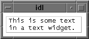

The W IDGET_TEXT function creates text widgets. Text widgets display text and optionally get textual input from the user. They can have one or more lines, and can optionally contain scroll bars to allow viewing more text than can otherwise be displayed on the screen.
|
 |
Result = WIDGET_TEXT( Parent [, / ALL_EVENTS ] [, / CONTEXT_EVENTS ] [, / EDITABLE ] [, EVENT_FUNC = string ] [, EVENT_PRO = string ] [, FONT = string ] [, FRAME = width ] [, FUNC_GET_VALUE = string ] [, GROUP_LEADER = widget_id ] [, IGNORE_ACCELERATORS = value ] [, / KBRD_FOCUS_EVENTS ] [, KILL_NOTIFY = string ] [, / NO_COPY ] [, / NO_NEWLINE ] [, NOTIFY_REALIZE = string ] [, PRO_SET_VALUE = string ] [, RESOURCE_NAME = string ] [, SCR_XSIZE = width ] [, SCR_YSIZE = height ] [, / SCROLL ] [, / SENSITIVE ] [, TAB_MODE = value ] [, / TRACKING_EVENTS ] [, UNAME = string ] [, UNITS ={0 | 1 | 2}] [, UVALUE = value ] [, VALUE = value ] [, / WRAP ] [, XOFFSET = value ] [, XSIZE = value ] [, YOFFSET = value ] [, YSIZE = value ] )
The returned value of this function is the widget ID of the newly-created text widget.
The widget ID of the parent widget for the new text widget.
Set this keyword to cause the text widget to generate events whenever the user changes the contents of the text area.
Note: If the EDITABLE keyword is set, an insert character event (TYPE=0) is generated when the user presses the Return or Enter key in the text widget, even if the ALL_EVENTS keyword is not set. See the table below for details on the interaction between ALL_EVENTS and EDITABLE.
|
Keywords |
Effects |
||
|
ALL_EVENTS |
EDITABLE |
Input changes widget contents? |
Type of events generated. |
|
Not set |
Not set |
No |
None |
|
Not set |
Set |
Yes |
End-of-line insertion |
|
Set |
Not set |
No |
All events |
|
Set |
Set |
Yes |
All events |
Set this keyword to cause context menu events (or simply context events) to be issued when the user clicks the right mouse button over the widget. Set the keyword to 0 (zero) to disable such events. Context events are intended for use with context-sensitive menus (also known as pop-up or shortcut menus); pass the context event ID to the WIDGET_DISPLAYCONTEXTMENU procedure within your widget program’s event handler to display the context menu.
For more on detecting and handling context menu events, see Context-Sensitive>Menus .
Set this keyword to allow direct user editing of the text widget contents. Normally, the text in text widgets is read-only. See ALL_EVENTS for a description of how EDITABLE interacts with the ALL_EVENTS keyword.
See ALL_TEXT_EVENTS for a description of how EDITABLE interacts with the ALL_TEXT_EVENTS keyword.
A string containing the name of a function to be called by the WIDGET_EVENT function when an event arrives from a widget in the widget hierarchy rooted at the newly-created widget.
A string containing the name of a procedure to be called by the WIDGET_EVENT function when an event arrives from a widget in the widget hierarchy rooted at the newly-created widget.
The name of the font to be used by the widget. The font specified is a “device font” (an X Windows font on Motif systems; a TrueType or PostScript font on Windows systems). See Using Device Fonts for details on specifying names for device fonts. If this keyword is omitted, the default font is used.
Note: On Microsoft Windows platforms, if FONT is not specified, IDL uses the system default font. Different versions of Windows use different system default fonts.
The value of this keyword specifies the width of a frame in units specified by the UNITS keyword (pixels are the default) to be drawn around the borders of the widget.
Note: This keyword is only a “hint” to the toolkit, and may be ignored in some instances. Under Microsoft Windows, text widgets always have frames.
A string containing the name of a function to be called when the GET_VALUE keyword to the WIDGET_CONTROL procedure is called for this widget. Using this technique allows you to change the value that should be returned for a widget. Compound widgets use this ability to define their values transparently to the user.
The widget ID of an existing widget that serves as “group leader” for the newly-created widget. When a group leader is killed, for any reason, all widgets in the group are also destroyed.
A given widget can be in more than one group. The WIDGET_CONTROL procedure can be used to add additional group associations to a widget. It is not possible to remove a widget from an existing group.
Set this keyword to specify what WIDGET_BUTTON a ccelerators are to be ignored when this text widget has keyboard focus. Valid values are:
A string or string array containing any value that is legal for WIDGET_BUTTON’s ACCELERATOR keyword
The number 1, indicating all accelerators should be ignored
Ordinarily, accelerators are processed before keyboard events reach the widget that has the keyboard focus. Consider a case where the accelerator “Ctrl+V” has been mapped to a button that allows the user to paste objects copied from one drawing area into another. In an application that also has a text widget, attempting to use Ctrl + V to paste text into the text widget would fail as this event would be stolen by the accelerator. Setting IGNORE_ACCELERATORS to “Ctrl+V” allows a text widget with an editable text area to receive keyboard events instead of the button with a conflicting accelerator. Once the text widget loses focus, all specified accelerators are automatically re-enabled.
See Disabling Button Widget Accelerators for usage details and examples.
Set this keyword to make the text widget return keyboard focus events whenever the keyboard focus of the widget changes. See Widget Events Returned by Text Widgets for more information.
Set this keyword to a string that contains the name of a procedure to be called automatically when the specified widget dies. Each widget is allowed a single such “callback” procedure. It can be removed by setting the routine to an empty string ( '' ).
The callback routine is called with the widget identifier as its only argument. At that point, the widget identifier can only be used with the WIDGET_CONTROL procedure to get or set the user value. All other requests that require a widget ID are disallowed for the target widget. The callback is not issued until the WIDGET_EVENT function is called.
Usually, when setting or getting widget user values, either at widget creation or using the SET_UVALUE and GET_UVALUE keywords to WIDGET_CONTROL, IDL makes a second copy of the data being transferred. Although this technique is fine for small data, it can have a significant memory cost when the data being copied is large.
If the NO_COPY keyword is set, IDL handles these operations differently. Rather than copy the source data, it takes the data away from the source and attaches it directly to the destination. This feature can be used by compound widgets to obtain state information from a UVALUE without all the memory copying that would otherwise occur. However, it has the side effect of causing the source variable to become undefined. On a “set” operation (using the UVALUE keyword to WIDGET_TEXT or the SET_UVALUE keyword to WIDGET_CONTROL), the variable passed as value becomes undefined. On a “get” operation (GET_UVALUE keyword to WIDGET_CONTROL), the user value of the widget in question becomes undefined.
Normally, when setting the value of a multi-line text widget, newline characters are automatically appended to the end of each line of text. Set this keyword to suppress this action.
Set this keyword to a string that contains the name of a procedure to be called automatically when the specified widget is realized. This callback occurs just once (because widgets are realized only once). Each widget is allowed a single such “callback” procedure. It can be removed by setting the routine to an empty string ( '' ). The callback routine is called with the widget ID as its only argument.
A string containing the name of a procedure to be called when the SET_VALUE keyword to the WIDGET_CONTROL procedure is called for this widget. See the description of the PRO_SET_VALUE keyword to WIDGET_CONTROL for information on using this keyword.
A string containing an X Window System resource name to be applied to the widget. See RESOURCE_NAME for a complete discussion of this keyword.
Set this keyword to the desired “screen” width of the widget, in units specified by the UNITS keyword (pixels are the default). In many cases, setting this keyword is the same as setting the XSIZE keyword.
Set this keyword to the desired “screen” height of the widget, in units specified by the UNITS keyword (pixels are the default). In many cases, setting this keyword is the same as setting the YSIZE keyword.
Set this keyword to give the widget scroll bars that allow viewing portions of the widget contents that are not currently on the screen.
Set this keyword to control the initial sensitivity state of the widget.
If SENSITIVE is zero, the widget becomes insensitive. If nonzero, it becomes sensitive. When a widget is sensitive, it has normal appearance and can receive user input. For example, a sensitive button widget can be activated by moving the mouse cursor over it and pressing a mouse button. When a widget is insensitive, it indicates the fact by changing its appearance, looking disabled, and it ignores any input.
Sensitivity can be used to control when a user is allowed to manipulate the widget. Note that some widgets do not change their appearance when they are made insensitive, but they cease generating events.
After creating the widget hierarchy, you can change the sensitivity state using the SENSITIVE keyword with the WIDGET_CONTROL procedure.
Set this keyword to one of the values shown in the table below to determine how the widget hierarchy can be navigated using the Tab key. The TAB_MODE setting is inherited by lower-level bases and child widgets from the parent WIDGET_BASE unless it is explicitly set on an individual widget. If the TAB_MODE value of the widget differs from that of the base, the setting on the widget will be respected when the widget has focus. For example, if a base does not support tabbing, but an individual child widget does support tabbing, this functionality will be enabled when the child widget has focus.
Note: It is not possible to tab to disabled (SENSITIVE=0) or hidden (MAP=0) widgets.
Valid settings are:
|
0 |
Disable navigation onto or off of the widget. This is the default unless the TAB_MODE has been set on a parent base. Child widgets automatically inherit the tab mode of the parent base as described in Inheriting the TAB_MODE Value . |
|
1 |
Enable navigation onto and off of the widget. |
|
2 |
Navigate only onto the widget. |
|
3 |
Navigate only off of the widget. |
If TAB_MODE is set equal to either 1 or 3 (that is, if the user can navigate off of the widget using the Tab key), then tab characters are not inserted into multi-line text widgets and no keypress event is generated when the Tab key is pressed. (Tab characters are never inserted into single-line text widgets.)
Note: In widget applications on the UNIX platform, the Motif library controls what widgets are brought into and released from focus using tabbing. The TAB_MODE keyword value is always zero, and any attempt to change it is ignored when running a widget application on the UNIX platform. Tabbing behavior may vary significantly between UNIX platforms; do not rely on a particular behavior being duplicated on all UNIX systems.
After creating the widget hierarchy, you can change tabbing support using the WIDGET_CONTROL procedure’s TAB_MODE keyword, or query a widget’s support for tabbing using the WIDGET_INFO procedure’s TAB_MODE keyword.
See Tabbing in Widget Applications for usage details and examples.
Set this keyword to cause widget tracking events to be issued for the widget whenever the mouse pointer enters or leaves the region covered by that widget. For the structure of tracking events, see TRACKING_EVENTS in the documentation for WIDGET_BASE.
Set this keyword to a string that can be used to identify the widget in your code. You can associate a name with each widget in a specific hierarchy, and then use that name to query the widget hierarchy and get the correct widget ID.
To query the widget hierarchy, use the WIDGET_INFO function with the FIND_BY_UNAME keyword. The UNAME should be unique to the widget hierarchy because the FIND_BY_UNAME keyword returns the ID of the first widget with the specified name.
Set this keyword to specify the units used when supplying measurements or position values. Set UNITS equal to 0 (zero) to specify that all measurements are in pixels (this is the default), to 1 (one) to specify that all measurements are in inches, or to 2 (two) to specify that all measurements are in centimeters. This keyword does not change the units used in a widget event structure or in most of the fields of the geometry structure returned by WIDGET_INFO.
Note: This keyword does not affect all sizing operations. Specifically, the value of UNITS is ignored when setting the XSIZE or YSIZE keywords to WIDGET_TEXT.
The “user value” to be assigned to the widget.
Each widget can contain a user-specified value of any data type and organization. This value is not used by the widget in any way, but exists entirely for the convenience of the IDL programmer. This keyword allows you to set this value when the widget is first created.
If UVALUE is not present, the widget’s initial user value is undefined.
The initial value setting of the widget. The value of a text widget is the current text displayed by the widget.
VALUE can be either a string or an array of strings. Note that variables returned by the GET_VALUE keyword to WIDGET_CONTROL are always string arrays, even if a scalar string is specified in the call to WIDGET_TEXT. When setting this value using WIDGET_CONTROL, by default the old text is replaced by the new text. Specifying the APPEND keyword to WIDGET_CONTROL causes the new text to be appended to the old text.
Note: You can use language catalogs to internationalize this value with strings in particular languages.
Set this keyword to indicate that scrolling or multi-line text widgets should automatically break lines between words to keep the text from extending past the right edge of the text display area. Note that carriage returns are not automatically entered when lines wrap; the value of the text widget will remain a single-element array unless you explicitly enter a carriage return.
Note: On Windows, the maximum line length for a multi-line text widget is 1024 characters, regardless of this keyword value.
The horizontal offset of the widget in units specified by the UNITS keyword (pixels are the default) relative to its parent. This offset is specified relative to the upper left corner of the parent widget.
Specifying an offset relative to a row or column major base widget does not work because those widgets enforce their own layout policies. This keyword is primarily of use relative to a plain base widget. Note that it is best to avoid using this style of widget programming.
The width of the widget in characters. Note that the physical width of the text widget depends on both the value of XSIZE and on the size of the font used. The default value of XSIZE varies according to your windowing system. On Windows, the default size is roughly 20 characters. On Motif, the default size depends on the width of the text widget.
The vertical offset of the widget in units specified by the UNITS keyword (pixels are the default) relative to its parent. This offset is specified relative to the upper left corner of the parent widget.
Specifying an offset relative to a row or column major base widget does not work because those widgets enforce their own layout policies. This keyword is primarily of use relative to a plain base widget. Note that it is best to avoid using this style of widget programming.
The height of the widget in text lines. Note that the physical height of the text widget depends on both the value of YSIZE and on the size of the font used. The default value of YSIZE is one line.
A number of keywords to the WIDGET_CONTROL procedure affect the behavior of text widgets. In addition to those keywords that affect all widgets, the following are particularly useful: ALL_TEXT_EVENTS , APPEND , CONTEXT_EVENTS , EDITABLE , GET_VALUE , KBRD_FOCUS_EVENTS , IGNORE_ACCELERATORS , INPUT_FOCUS , NO_NEWLINE , SET_TEXT_SELECT , SET_TEXT_TOP_LINE , SET_VALUE , USE_TEXT_SELECT .
A number of keywords to the WIDGET_INFO function return information that applies specifically to text widgets. In addition to those keywords that apply to all widgets, the following are particularly useful: CONTEXT_EVENTS , KBRD_FOCUS_EVENTS , STRING_SIZE , TEXT_ALL_EVENTS , TEXT_EDITABLE , TEXT_NUMBER , TEXT_OFFSET_TO_XY , TEXT_SELECT , TEXT_TOP_LINE , TEXT_XY_TO_OFFSET .
There are several variations of the text widget event structure depending on the specific event being reported. All of these structures contain the standard three fields (ID, TOP, and HANDLER) as well as an integer TYPE field that indicates which type of structure has been returned. Programs should always check the type field before referencing fields that are not present in all text event structures. The different text widget event structures are described below.
This is the type of structure returned when a single character is typed or pasted into a text widget by a user.
{ WIDGET_TEXT_CH, ID:0L, TOP:0L, HANDLER:0L, TYPE:0, OFFSET:0L, CH:0B }
OFFSET is the (zero-based) insertion position that will result after the character is inserted. CH is the ASCII value of the character.
This is the type of structure returned when multiple characters are pasted into a text widget by the window system.
{ WIDGET_TEXT_STR, ID:0L, TOP:0L, HANDLER:0L, TYPE:1, OFFSET:0L, STR:'' }
OFFSET is the (zero-based) insertion position that will result after the text is inserted. STR is the string to be inserted.
This is the type of structure returned when any amount of text is deleted from a text widget.
{ WIDGET_TEXT_DEL, ID:0L, TOP:0L, HANDLER:0L, TYPE:2, OFFSET:0L,
LENGTH:0L }
OFFSET is the (zero-based) character position of the first character to be deleted. It is also the insertion position that will result when the characters have been deleted. LENGTH gives the number of characters involved. A LENGTH of zero indicates that no characters were deleted.
This is the type of structure returned when an area of text is selected (highlighted) by the user.
{ WIDGET_TEXT_SEL, ID:0L, TOP:0L, HANDLER:0L, TYPE:3, OFFSET:0L,
LENGTH:0L }
The event announces a change in the insertion point. OFFSET is the (zero-based) character position of the first character to be selected. LENGTH gives the number of characters involved. A LENGTH of zero indicates that no characters are selected, and the new insertion position is given by OFFSET.
Note that text insertion, text deletion, or any change in the current insertion point causes any current selection to be lost. In such cases, the loss of selection is implied by the text event reporting the insert/delete/movement and a separate zero length selection event is not sent.
Text widgets return the following event structure when the keyboard focus changes and the widget was created with the KBRD_FOCUS_EVENTS keyword set:
{ WIDGET_KBRD_FOCUS, ID:0L, TOP:0L, HANDLER:0L, ENTER:0 }
The first three fields are the standard fields found in every widget event. The ENTER field returns 1 (one) if the text widget is gaining the keyboard focus, or 0 (zero) if the text widget is losing the keyboard focus.
A text widget created with the CONTEXT_EVENTS keyword set returns the following event structure in response to a right mouse button click:
{WIDGET_CONTEXT, ID:0L, TOP:0L, HANDLER:0L, X:0L, Y:0L,
ROW:0L, COL:0L}
The first three fields are the standard fields found in every widget event. The X and Y fields give the device coordinates at which the event occurred, measured from the upper left corner of the text widget. The ROW and COL fields return meaningful information for table widgets and values of zero (0) for other widgets.
|
Pre-4.0 |
Introduced |
|
6.1 |
Added IGNORE_ACCELERATORS and TAB_MODE keywords Added ROW and COL fields to WIDGET_CONTEXT event structure |